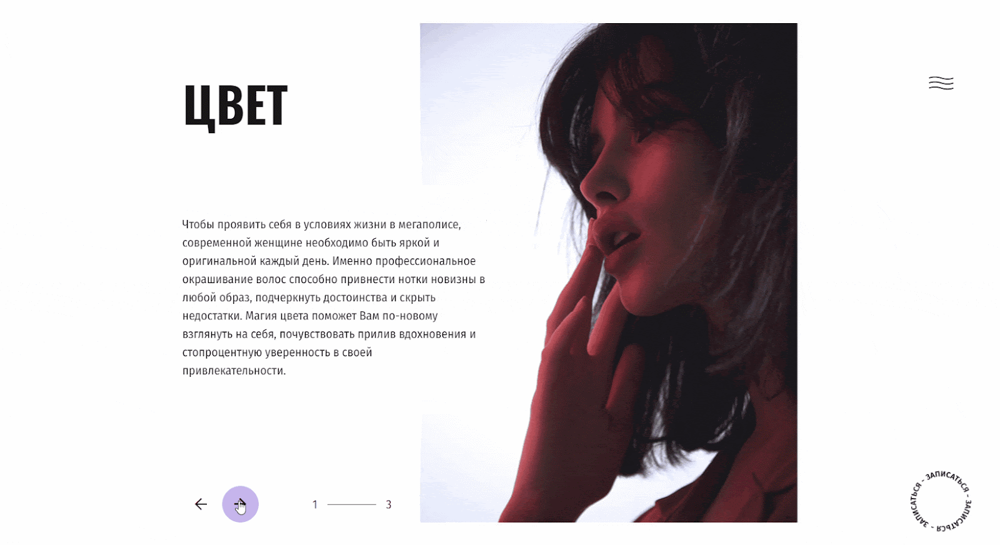
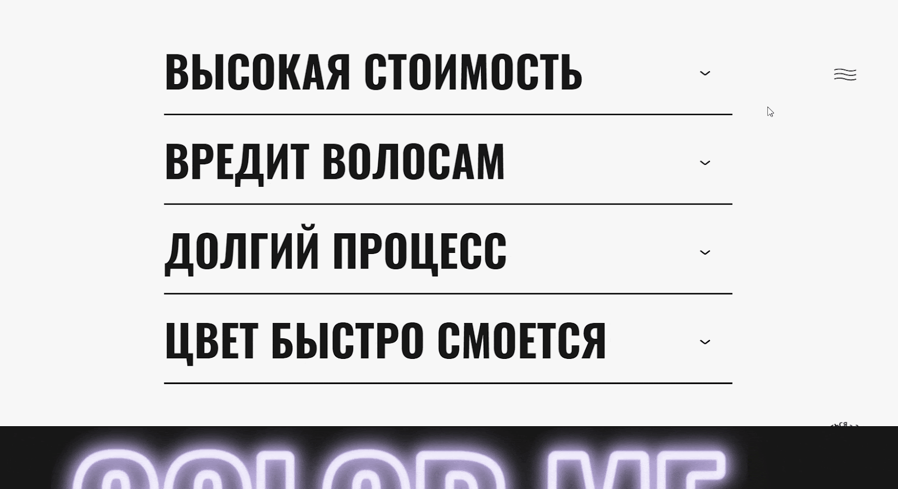
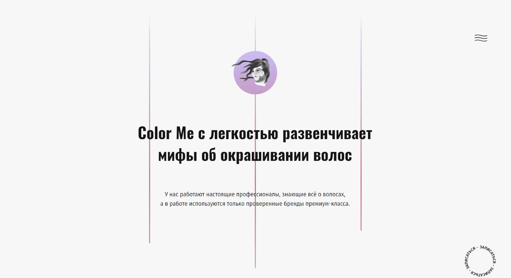
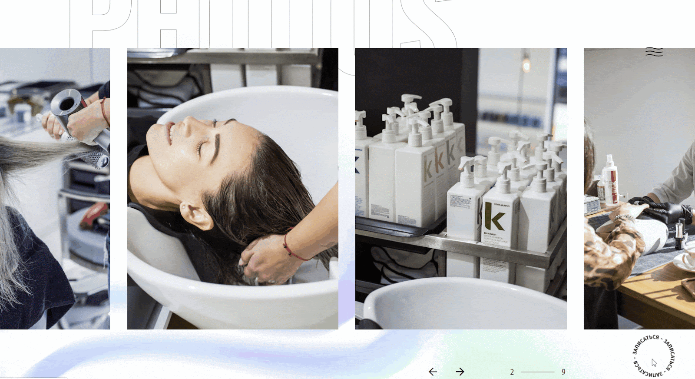
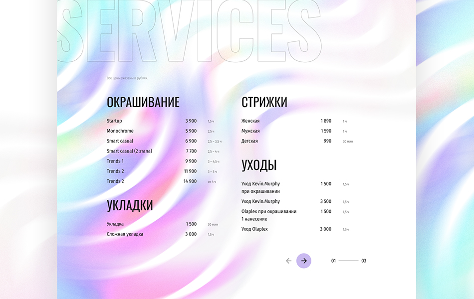

О проекте
Индустрия красоты уверенно развивается, и становится всё более специализированной. Вместо одного салона красоты теперь нэйл-студии, brow бары, мастера наращивания ресниц и шугаринг любой зоны на выбор. Ничего страшного в этом нет, напротив, услуги становятся лучше, а экономика — устойчивее.
Для салонов красоты, которые всегда предлагали комплексный подход, в такой ситуации приходится открывать новый бренд, чтобы занять нужную позицию и правильно выстроить маркетинг на изменяющемся рынке.
Именно так, буквально на наших глазах, из московского салона красоты SALON8, появился новый бренд студии колористики Color Me.
О компании
Color Me — студия окрашивания волос в Москве, современное и динамичное beauty-пространство.
Цель компании — предоставить современным жителям мегаполиса профессиональный сервис по окрашиванию и уходу за волосами в формате, соответствующем их ритму жизни.
В самой студии создана атмосфера dressing room (закулисья fashion-съемки или модного показа), в которой каждая девушка почувствует себя моделью.
Color Me даёт самое главное: наслаждение собой и уверенность в собственном образе.
Дизайн
Слоган бренда: Цвет. Форма. Индивидуальность. Отличный девиз для дизайнера!
Основной задачей было создать атмосферу fashion-индустрии: крупные заголовки, большие фото и разрядка текста, как в глянцевых журналах.
И неон, конечно, какой же fashion без неона ;)


А волосы не портит?
Существует множество мифов и страхов по поводу окрашивания волос. Волосы выпадут, станут сухими, а вдруг мне вообще не подойдет короткая стрижка или яркий цвет волос? Все это останавливает многих девушек от экспериментов с волосами.
Мы решили, что нужно обязательно уделить внимание этой теме и развеять некоторые из мифов.

Онлайн-запись
Для студии очень важно не пропустить ни одного клиента. Внедрили онлайн-запись от сервиса автоматизации сферы услуг Yclients.
Новые клиенты сразу обрабатываются, Yclients используют администраторы внутри салона, запись попадает сразу в привычное место работы.

Административная часть
Поддерживать сайт можно самостоятельно благодаря удобной и понятной OctoberCMS. Прайс, пополнение фотогалереи, акции, бренды, контакты — все это вывели в админку.
Результат
Стильный лендинг с крутой анимацией, еще и удобной записью. Клиент в восторге, а это главное!
Если вы всё еще сомневаетесь, а не добавить ли цвета своим волосам и яркости образу, то сайт colorme.ru лучше не посещать — сомнений после не останется ;-)
